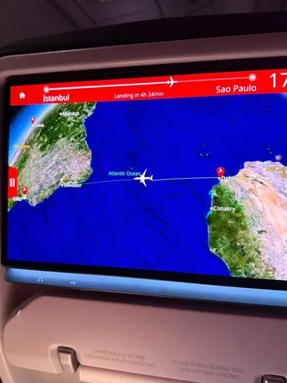
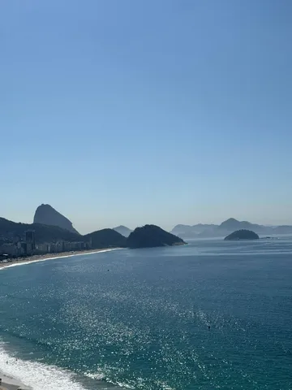
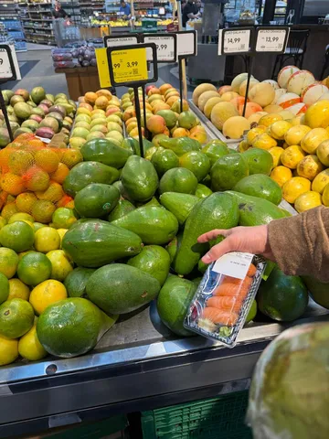
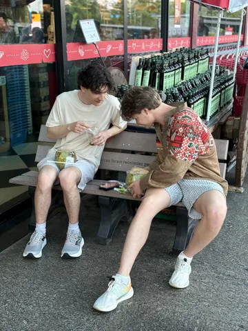
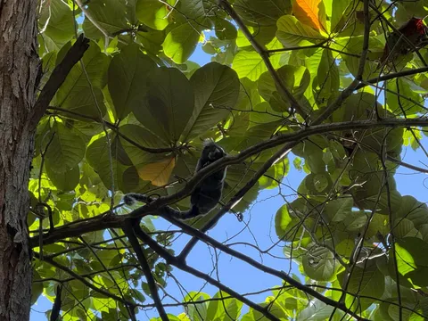
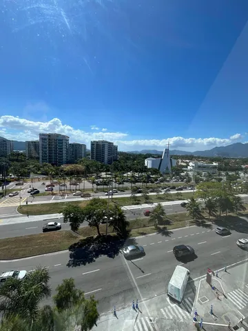

Olá, amigos! Кто-то из наших инженеров уже любуется красотами Бразилии и считает диких обезьян, а кто-то ещё в многочасовом перелёте с кучей пересадок. Но всё это того стоит — впереди ICLR 2026.
Совсем скоро начнём вещать из Рио во всех наших каналах, а пока несём первые фото и впечатления.
Иван Ершов, руководитель команды LLM-агентов Алисы:
Рио — яркий, красочный, зелёный, громкий. Я впервые перелетел Атлантику, соответственно впервые в Латинской Америке. Природа, постройки, люди сильно отличаются от того, что я привык видеть в Европе.
Поражает количество зелени, разнообразие деревьев, птиц, животных. На первой же прогулке с коллегами было ощущение, что улица — «бесплатный зоопарк»: обезьяны, маракуйя, папайя. При всём обилии зелени город выглядит аккуратным и убранным.
Люди в основном говорят на португальском — даже в аэропорту пришлось объясняться жестами. Мне пока больше помогает знание итальянского, чем английского.
Данил Кашин, руководитель команды претрейна VLM:
Пережив 14-часовой перелёт, добрались до Рио. Погода замечательная, красивые виды. Сейчас боремся с джетлагом и изучаем расписание оралов и постеров, чтобы собрать всё самое интересное и поделиться этим в каналах!
Вилиана Девбунова, разработчик службы технологий голосового ввода:
Очень заметен контраст: едешь по городу и в какой-то момент оказываешься рядом с горами, плотно усыпанными простыми домами — так называемыми фавелами. По застройке Копакабана похожа на Анталью.
Фан-факт: я уже проехала по Рио больше 60 км и не увидела ни одного спортивного мотоцикла — в основном все ездят на нейкедах с узкими кастомными рулями.
#YaICLR26
ML Underhood





